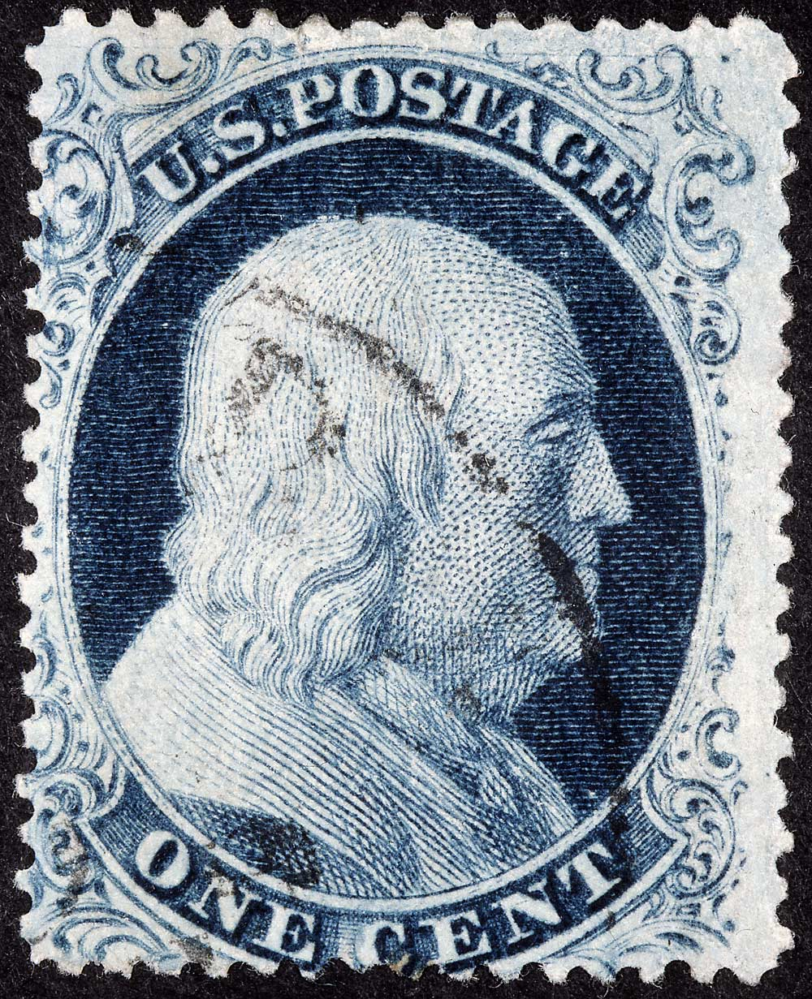

1¢ Franklin Issue of 1851-1857, PLATE 4 Position 10R4 |
| Blue, Type II, Relief A, Transfer Roller Number 2. Issued both imperforate (7) and perforate (20). The top row "A" relief on Plate 4 is the only row that has the FULL DESIGN at the top. Note that Ornaments "S", "U", "X" and "Z" are complete. Plate 4 changed it's appearance as many plating marks faded away due to plate wear, and new plating marks developed over the life of the plate. One of the most annoying aspects of trying to identify Plate 4 positions is the appearance and disappearance of these plating marks. PLATING NOTES: Courtesy of Tyler Moody |
| Figure 1. (BELOW) Heavy dot of color above Ornament Y and numerous plate scratches found in the upper right quadrant as illustrated in the Neinken plating diagram.
|
| Figure 2. (BELOW) Heavy plate scratches in Ornaments A/B and plating marks caused by a shifted entry (double transfer) easily seen in the P and O of POSTAGE as illustrated in the Neinken plating diagram.
|
|
Figure 3. (BELOW) |
|  |
|
Figure 4. (BELOW) Part of a horizontal strip of 5, Positions 6R4-10R4 |
| DISCLAIMER and COPYRIGHT INFORMATION: Thanks for visiting this site. I hope you learn something new as we are making new discoveries all the time. You, the visitor, have my permission to link to my pages and to share the INFORMATION with others. The images themselves fall under the fair use guidelines established by the United States Congress and Copyright law. Basically contact us before using. I also ask in return that you send me an e-mail if I have made a mistake, or have made some other technical blunder that in my rush to put these pages up would cause the visitor confusion. Please also visit my other website at www.slingshotvenus.com. and support the live music arts. While your there, be sure to purchase our music. There are not many philatelic rock stars around and we need all the help we can get. :-) I can be reached at: nerdman@ix.netcom.com REVISED 7.31.15 |